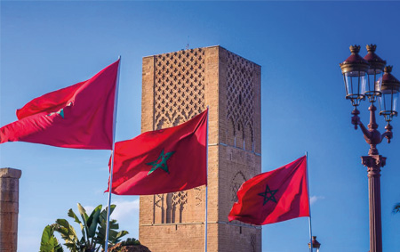
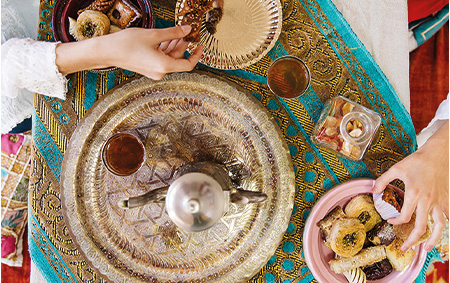

Calendario de Marruecos: así es
Antes de detallar cuáles son los días festivos en Marruecos, conviene explicar que en este país magrebí se utiliza otro calendario distinto al occidental: el calendario musulmán. Este calendario tiene otra fecha de partida, y además la duración de los ciclos (meses y años) es diferente, por lo que no coincide con el nuestro, que es el romano:
.Fecha inicial del calendario de Marruecos: el 21 de junio de 622 d.C. Ese es el día conocido como la Hégira, es decir, la huida de Mahoma desde La Meca a Medina. Ese año, por tanto, es el año 1 del calendario de Marruecos
Ciclo de referencia para la duración de los años: el ciclo lunar. Es decir, el periodo que va desde el primer avistamiento de una luna creciente hasta el siguiente avistamiento, pasando así por los cuatro estados intermedios: el cuarto creciente, la luna llena, el cuarto menguante y la luna nueva.
Duración de un mes musulmán: 29,5 días, que es el periodo en que se completa en cada ciclo lunar. Estos son los meses del calendario de Marruecos, en este orden: Muharram Safar Rabi’ al-Awwal Rabi’ al-Thani Yumada al-Awwal Yumada al-Thani Rayab Sha’ban Ramadán Shawwal Dhu ul-Qádah Dhu ul-Híyyah
Duración del año: entre 354 y 355 días. Por tanto, el calendario de Marruecos tiene entre 11 y 12 días menos que el calendario occidental, que es solar (se divide en 12 meses más o menos proporcionales a lo largo del periodo que tarda la Tierra en girar alrededor del sol)


El día de descanso semanal en Marruecos
Además de todos estos días festivos en Marruecos, hay que recordar que en este país también se tiene la costumbre de descansar al menos un día a la semana, de la misma manera que hacen los cristianos tratan de librar el domingo o los judíos, el sábado.
En este sentido, Marruecos es algo más flexible y, según el Código Laboral del país, es obligatorio descansar al menos 24 horas entre el viernes, el sábado y el domingo, o bien el día de mercado semanal, aunque en los oficios de muchos sectores resulta imposible librar en esos días. En cualquier caso, si atendemos a los horarios habituales de una oficina, como por ejemplo las sucursales bancarias, se suele elegir el fin de semana (sábado y domingo) como días de descanso.
No obstante, conviene recordar que el viernes es el día del rezo más importante (azalá), que tiene lugar poco después del mediodía. Por ello, en este horario tampoco suele haber actividad, algo que algunas personas pueden aprovechar para iniciar su descanso semanal.
Cuando nos traslades tu solicitud de viaje, analizaremos las fechas y tendremos en cuenta los días festivos de Marruecos, así como las jornadas de descanso y otras fechas de interés como el Ramadán para hacerte una propuesta que aproveche al máximo cada día. Contacta con nosotros y empecemos a organizar un viaje inolvidable.